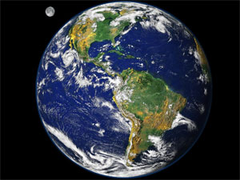

|
O Sistema Solar é constituído por oito planetas principais, são eles: Mercurio, Venus, Terra, Marte, Júpiter, Saturno, Urano e Netuno.
A Terra é o terceiro planeta mais próximo do Sol, o mais denso e o quinto maior dos oito planetas do Sistema Solar. É também o maior dos quatro planetas telúricos. É por vezes designada como Mundo ou Planeta Azul. Lar de milhões de espécies de seres vivos, incluindo os humanos, a Terra é o único corpo celeste onde é conhecida a existência de vida. |
| Terra | |||||||||||
|---|---|---|---|---|---|---|---|---|---|---|---|
|  |
|
Fonte wikipedia